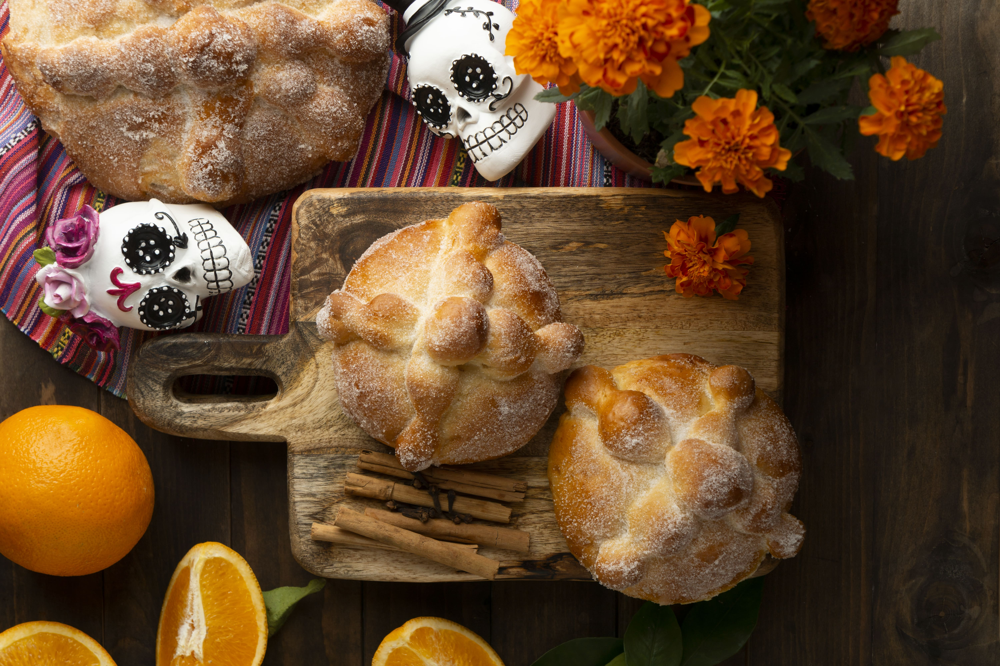
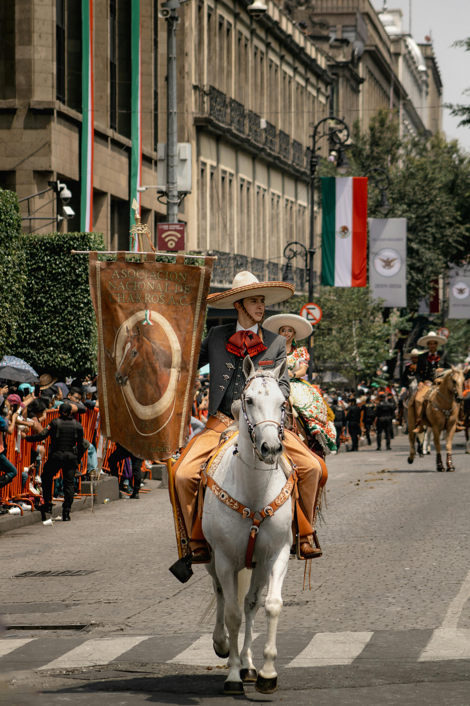

México, un país vivo en su cultura
La cultura mexicana destaca por la riqueza de sus tradiciones, la diversidad de sus expresiones artísticas y el profundo orgullo por sus raíces. A lo largo del año se celebran festividades emblemáticas como el Día de los Muertos, las fiestas patrias y las celebraciones navideñas, donde la música, la danza, la gastronomía y los trajes típicos llenan de color y significado cada evento. Estas tradiciones, transmitidas de generación en generación, fortalecen el sentido de identidad y comunidad. Además, la cultura se refleja en la vida cotidiana a través de la artesanía, el folclor, la música tradicional y la importancia de la familia como núcleo social. Cada región del país aporta costumbres propias que enriquecen aún más esta diversidad cultural. En conjunto, la cultura mexicana no solo forma parte de su historia, sino que sigue viva en cada celebración y en cada expresión artística del presente.
Día de muertos

El Día de los Muertos es una de las tradiciones más representativas y significativas de México. Se celebra el 1 y 2 de noviembre como una forma de honrar y recordar a los seres queridos que han fallecido. Las familias preparan altares decorados con flores de cempasúchil, velas, fotografías, pan de muerto y los alimentos favoritos del difunto. Esta tradición combina elementos indígenas y religiosos, y transforma el recuerdo en una celebración llena de color, música y simbolismo. Más que un momento de tristeza, es una fecha para compartir, recordar y mantener viva la memoria de quienes ya no están.
Fiestas patrias
Las Fiestas Patrias se celebran cada 15 y 16 de septiembre para conmemorar el inicio de la Independencia de México. Durante estas fechas, el país se llena de banderas, luces tricolores y un ambiente de orgullo nacional. La noche del 15 de septiembre se realiza el tradicional “Grito de Independencia”, donde se recuerda el llamado histórico que dio inicio a la lucha por la libertad. Además, se organizan desfiles, eventos culturales y reuniones familiares acompañadas de música y comida típica. Es una celebración que fortalece el sentido de identidad y unidad entre los mexicanos.

Las posadas
Las Posadas son celebraciones tradicionales que se llevan a cabo del 16 al 24 de diciembre, representando el recorrido de María y José en busca de alojamiento antes del nacimiento de Jesús. Durante estas fechas, vecinos y familiares se reúnen para cantar villancicos, encender velas y participar en la tradicional petición de posada. También se comparten alimentos típicos de la temporada y se rompe la piñata, símbolo de alegría y convivencia. Esta tradición no solo tiene un significado religioso, sino que también fortalece la unión familiar y el espíritu comunitario.